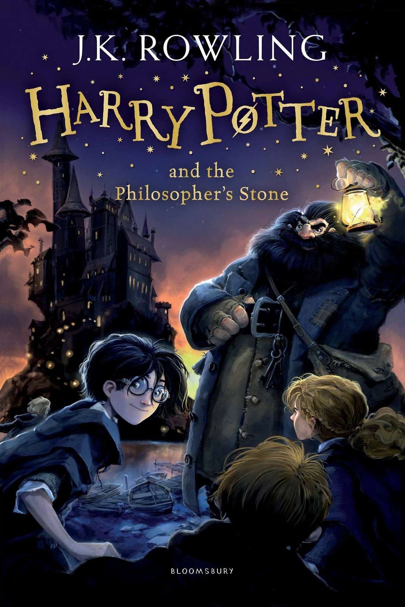

Welcome to the unofficial Harry Potter website!
This is a fan page dedicated to the beautiful masterpiece 'Harry Potter and the Philosopher’s Stone' by J.K. Rowling. 'Harry Potter and the Philosopher’s Stone' is a book about a young boy who discovers to be a wizard, and his journey as a student in the wizarding world at Hogwarts.
About the Contents
On this website, you can find information on the summary of the book, a collection of the characters appearing in the book and their brief description, a timeline of the Harry Potter universe, an overview of the book's trivia about the book and its author, information on the movie adaptation of the book, and information on the author herself.
About the Creators
This website was made by a group of three students, who are learning how to develop websites and write the languages HTML, CSS and JavaScript. The website you see before you was the first assignment for their course at the University of Utrecht, 'Web-Technology'.